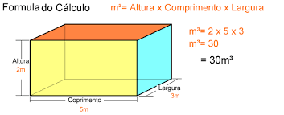

Es una unidad de medida de volumen, representa el volumen ocupado por un cubo de un metro de lado. Se utiliza normalmente para medir el volumen de agua que cabe en una piscina, la capacidad de transporte de un camión cisterna o el volumen de aire que hay en una habitación.
La determinación de metros cúbicos (CBM) es el primer paso que debe tomar para determinar la forma de transportar su carga. CBM Fórmula de cálculo: De longitud x ancho x altura (centímetros) / 1,000,000 = metros longitud x ancho x altura (metro)= metro cúbico (m³)
